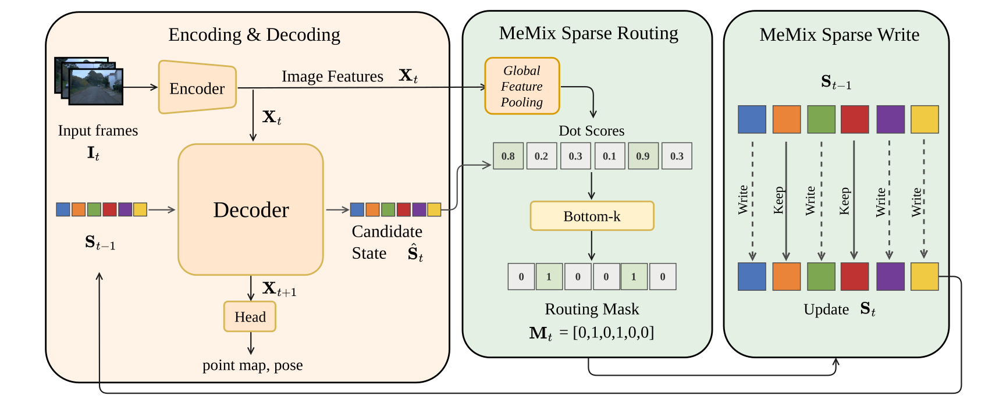

w/o MeMix
Loading 3D scene...
1Institute for AI Industry Research, Tsinghua University 2Zhejiang University
* Equal contribution. † Corresponding author.
TL;DR: Training-free selective memory updates for long-horizon recurrent streaming 3D reconstruction.
Reconstruction is a fundamental task in 3D vision and a fundamental capability for spatial intelligence. Particularly, streaming 3D reconstruction is central to real-time spatial perception, yet existing recurrent online models often suffer from progressive degradation on long sequences due to state drift and forgetting, motivating inference-time remedies. We present MeMix, a training-free, plug-and-play module that improves streaming reconstruction by recasting the recurrent state into a Memory Mixture. MeMix partitions the state into multiple independent memory patches and updates only the least-aligned memory patches while exactly preserving others. This selective update mitigates catastrophic forgetting while retaining O(1) inference memory, and requires no fine-tuning or additional learnable parameters, making it directly applicable to existing recurrent reconstruction models. Across standard benchmarks (ScanNet, 7-Scenes, KITTI, etc.), under identical backbones and inference settings, MeMix reduces reconstruction completeness error by 15.3% on average (up to 40.0%) across 300-500 frame streams on 7-Scenes.

Current Scene
CUT w/o MeMix / CUT w/ MeMix · 300 views
w/o MeMix
w/ MeMix
Results are downsampled for efficient online rendering, with each frame capped at 1200 points, and camera motion is synced with ~100ms delay.
MeMix delivers consistent gains across multiple recurrent streaming 3D reconstruction backbones.
Green cells indicate that w/ MeMix matches or outperforms the corresponding backbone. Please refer to the paper for the complete tables.
Representative results on 7-Scenes-S, evaluated with 300 views.
| Method | MeMix | Acc Mean ↓ | Comp Mean ↓ | NC Mean ↑ |
|---|---|---|---|---|
| CUT3R [3] | × | 0.141 | 0.076 | 0.543 |
| CUT3R [3] | ✓ | 0.106 | 0.053 | 0.550 |
| TTT3R [11] | × | 0.040 | 0.024 | 0.567 |
| TTT3R [11] | ✓ | 0.034 | 0.023 | 0.567 |
| TTSA3R [15] | × | 0.036 | 0.035 | 0.566 |
| TTSA3R [15] | ✓ | 0.026 | 0.021 | 0.568 |
Representative results on 7-Scenes-D, evaluated with 300 views.
| Method | MeMix | Acc Mean ↓ | Comp Mean ↓ | NC Mean ↑ |
|---|---|---|---|---|
| CUT3R [3] | × | 0.099 | 0.048 | 0.542 |
| CUT3R [3] | ✓ | 0.076 | 0.039 | 0.549 |
| TTT3R [11] | × | 0.030 | 0.019 | 0.558 |
| TTT3R [11] | ✓ | 0.030 | 0.019 | 0.559 |
| TTSA3R [15] | × | 0.023 | 0.018 | 0.558 |
| TTSA3R [15] | ✓ | 0.022 | 0.017 | 0.559 |
Selected pose metrics with clearer gains on TUM-dynamics, ScanNet, and Sintel.
| Method | MeMix | TUM ATE ↓ | TUM RPE rot ↓ | ScanNet ATE ↓ | Sintel RPE trans ↓ |
|---|---|---|---|---|---|
| CUT3R [3] | × | 0.045 | 0.443 | 0.096 | 0.069 |
| CUT3R [3] | ✓ | 0.043 | 0.424 | 0.090 | 0.075 |
| TTT3R [11] | × | 0.029 | 0.380 | 0.065 | 0.093 |
| TTT3R [11] | ✓ | 0.028 | 0.376 | 0.065 | 0.083 |
| TTSA3R [15] | × | 0.026 | 0.372 | 0.058 | 0.084 |
| TTSA3R [15] | ✓ | 0.025 | 0.372 | 0.057 | 0.084 |
Selected per-sequence-scale metrics that most clearly show the depth gains of MeMix.
| Method | MeMix | KITTI Abs Rel ↓ | KITTI δ < 1.25 ↑ | Sintel Abs Rel ↓ | Sintel δ < 1.25 ↑ |
|---|---|---|---|---|---|
| CUT3R [3] | × | 0.116 | 88.1 | 0.426 | 47.3 |
| CUT3R [3] | ✓ | 0.115 | 88.6 | 0.436 | 46.2 |
| TTT3R [11] | × | 0.107 | 91.2 | 0.409 | 48.9 |
| TTT3R [11] | ✓ | 0.103 | 92.1 | 0.407 | 49.2 |
| TTSA3R [15] | × | 0.103 | 91.9 | 0.410 | 49.6 |
| TTSA3R [15] | ✓ | 0.103 | 92.2 | 0.400 | 50.2 |
Inference FPS and peak GPU memory on KITTI. MeMix keeps GPU memory unchanged under the reported settings.
| Method | FPS w/o | FPS w. | GPU w/o | GPU w. |
|---|---|---|---|---|
| CUT3R | 14.39 | 14.13 | 5.31 GB | 5.31 GB |
| TTT3R | 12.72 | 12.81 | 6.96 GB | 6.96 GB |
| TTSA3R | 12.58 | 12.78 | 6.63 GB | 6.63 GB |
@misc{dong2026memix,
title = {MeMix: Writing Less, Remembering More for Streaming 3D Reconstruction},
author = {Jiacheng Dong and Huan Li and Sicheng Zhou and Wenhao Hu and Weili Xu and Yan Wang},
year = {2026},
note = {Preprint}
}